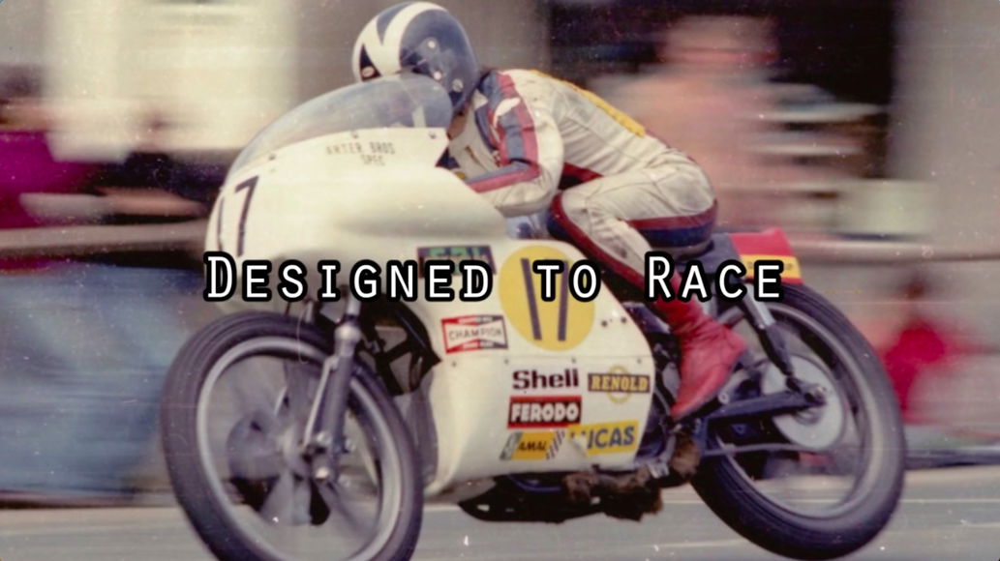
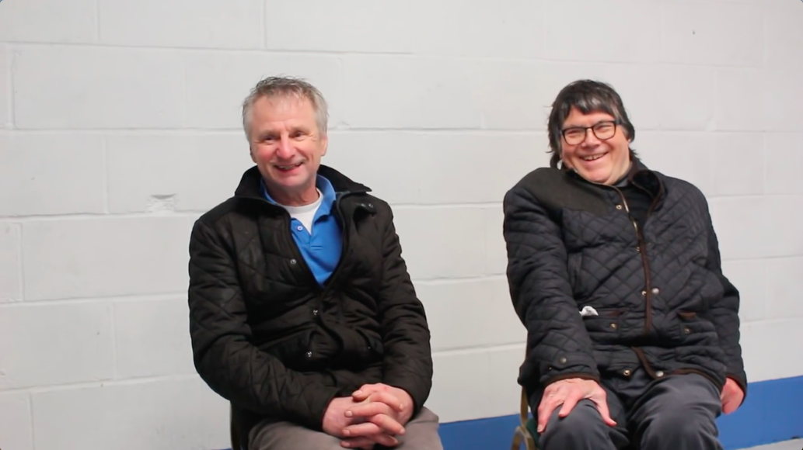
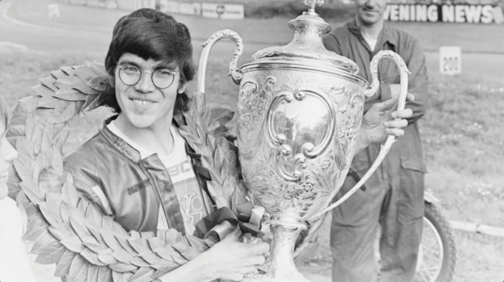
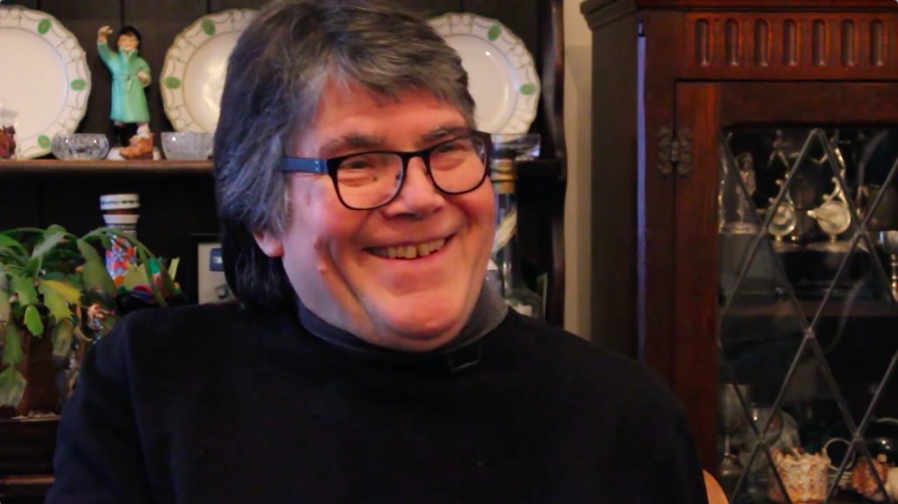

Peter Jack Williams
Work
About
Designed to Race
Documentary about Peter Williams; Former Gran Prix and TT motorcycle racer and engineer, now full time engineer. Peter is reminicent of the past, and we also meet his former mechanic, friend, and my godfarther, Norman White.
Created - March 2015
   